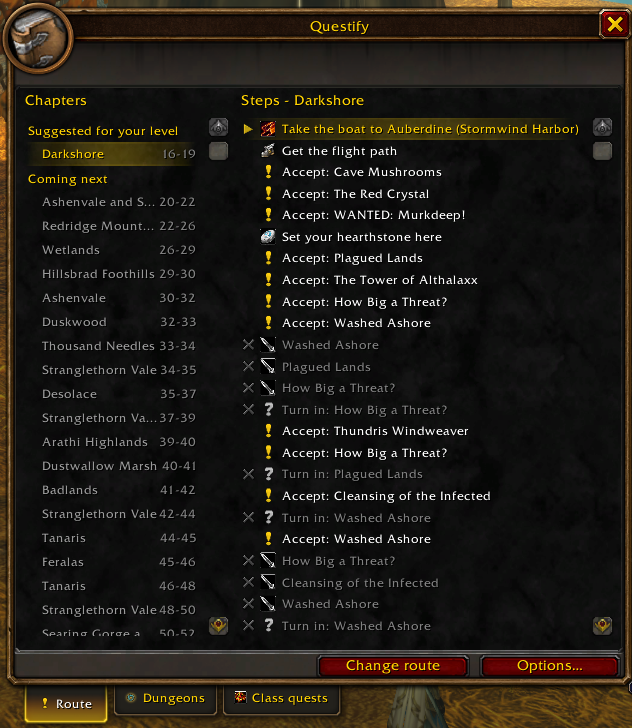

Chapters on the left, grouped: suggested for your level, coming next, then done, below your level or for another race. A green check marks a finished chapter.
The steps of the followed chapter on the right: done, current, to do. Click a chapter to follow it, a step to make it the current one.
Three tabs, each with the icon of its button in the tracker.
